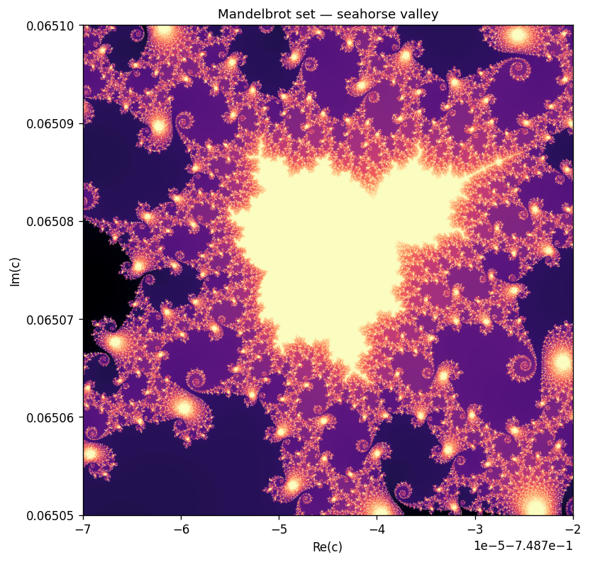
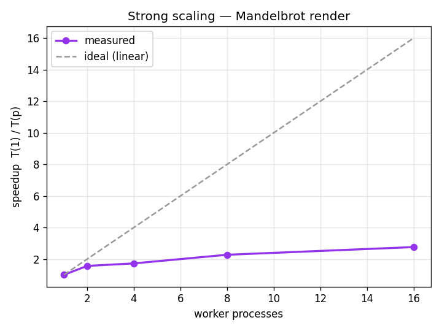
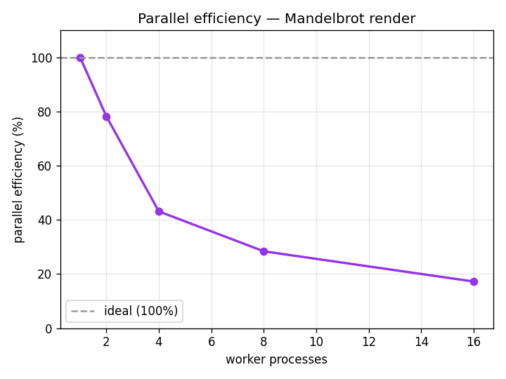

From-Scratch Build · High-Performance Computing
Take one genuinely compute-heavy workload — escape-time rendering of the Mandelbrot set — and make it fly: profile the hotspot, vectorise it with NumPy, spread it across CPU cores with multiprocessing, and then prove the speedup with a real strong-scaling study. All four implementations return the same pixels; every speedup is a measured win, not a changed answer.
The output
For every pixel c of a complex-plane grid, iterate z → z² + c until |z| > 2 and record how many steps it took. That iteration count is the image. The workload is embarrassingly parallel — pixels are independent — but the per-pixel cost is wildly uneven (points inside the set run the full budget), which is what makes the scaling honest rather than trivially linear.

The implementations
Same input, same output array (verified), increasing speed.
A pure-Python double loop over pixels. Correct and readable, and the baseline everything is timed and checked against.
One NumPy pass over the whole grid — Python-interpreter overhead paid once per iteration, not once per pixel.
Split the rows into bands, run the NumPy kernel per band in its own process, stitch the bands back together.
An @njit(parallel=True) kernel, enabled automatically if numba is installed. In-process threads, no spawn cost.
Profile first
cProfile on the naive kernel is unambiguous: essentially 100% of the time is the per-pixel escape loop in mandelbrot_naive — which is precisely the function the other three kernels replace.
ncalls tottime cumtime filename:lineno(function)
1 0.588 0.588 hpc/mandelbrot.py:80(mandelbrot_naive)
2 0.000 0.000 numpy/function_base.py:24(linspace)
>>> Hotspot (most self-time): mandelbrot_naive
The evidence
Fix the problem size (800×800, max_iter=1000), increase the worker processes, take the best of 3 runs after a warmup. Measured on a 16-core machine. speedup = T(1)/T(p), efficiency = speedup/p.
| workers | time (s) | speedup | efficiency |
|---|---|---|---|
| 1 | 23.867 | 1.00x | 100.0% |
| 2 | 15.256 | 1.56x | 78.2% |
| 4 | 13.838 | 1.72x | 43.1% |
| 8 | 10.507 | 2.27x | 28.4% |
| 16 | 8.652 | 2.76x | 17.2% |


Read honestly. The speedup is real (2.76x on 16 cores) but plainly sub-linear, and efficiency collapses as cores are added. That's Amdahl's law: the fixed overhead of this setup — spawning processes, pickling each result band back, the final concatenation — is work a fast NumPy kernel finishes in seconds, so more processes hit diminishing returns fast. On Windows the only portable start method is spawn, whose per-process cost is high, which is why the knee comes early.
Head to head
Same 400×400 view, max_iter=400, all four kernels.
| kernel | time (s) | vs naive |
|---|---|---|
| naive (pure Python) | 8.074 | 1.0x |
| numpy (vectorised) | 2.220 | 3.6x |
| parallel (16 cores) | 2.529 | 3.2x |
| numba (JIT, threads) | 0.008 | 1021x |
The honest punchline: vectorisation is the big win. At this size the multiprocessing version barely matches single-process NumPy — spawn overhead eats the gain — and only pulls ahead on the larger scaling instance above. Numba's in-process JIT avoids all process overhead and wins by three orders of magnitude: the right tool when you can use it.
Scope
This is a single-node, multi-core study. A real cluster with many machines and MPI is out of scope for one laptop — so the page doesn't claim it. But the decomposition used here is the distributed one, and the jump is mechanical:
Give MPI rank r of n its slice of rows — the same split this code already does.
Pixels are independent, so unlike a stencil or PDE solver there is zero communication during compute — only the final gather.
Replace the process-pool map and concatenate with an MPI Gatherv onto rank 0.
Communication is cheap (one gather); load imbalance isn't — an equal-rows split hands some ranks mostly-interior, expensive rows. A serious version would deal out smaller chunks dynamically.
Coursework
The interactive material above is the theory; these are the standalone apps and tools I built for the course.